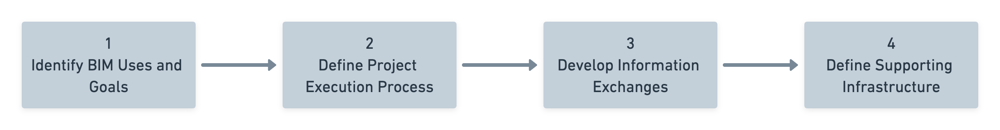

A successful project requires a smart plan, lean scope, collaborative processes, team agreement, supporting technology, and solid tracking, control, and verification workflows.
Our project execution planning ensures that all parties are clearly aware of the opportunities and responsibilities associated with the incorporation of Building Information Modeling (BIM) into our project. Our plan details the correct processes for executing BIM throughout the project's lifecycle.
On this project, we will follow these four steps to ensure that all teams are meeting the project's Exchange Information Requirements:
To gain the maximum benefits from our BIM implementation, once the Plan and Scope have been defined and appointed, the Task Teams will Schedule their own tasks. Our team will then Track the progress of assigned tasks and Verify task completeness before sharing the model for the described use case.